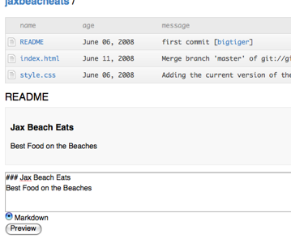
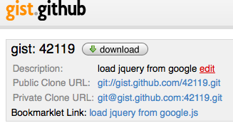

githubber – github bookmarklet
Designed to add helpful UI elements to github.com
Features
- Adds a link to your dashboard which toggles the Hashrocket projects under "watched repositories"

- Adds a textbox to a root repository allowing you to edit and preview your readme file. (markdown supported, textile next)
- 
- Adds bookmarklet link when viewing a gist allowing you to host your bookmarklet on gist.github.com
- 
Install
- Drag
githubber
to your bookmarks
- Visit your github dashboard or a repository root (github.com/you/code/tree/master)
- Click the bookmarklet
Other
Bookmarklet updated on 01-28-08.
See history at github